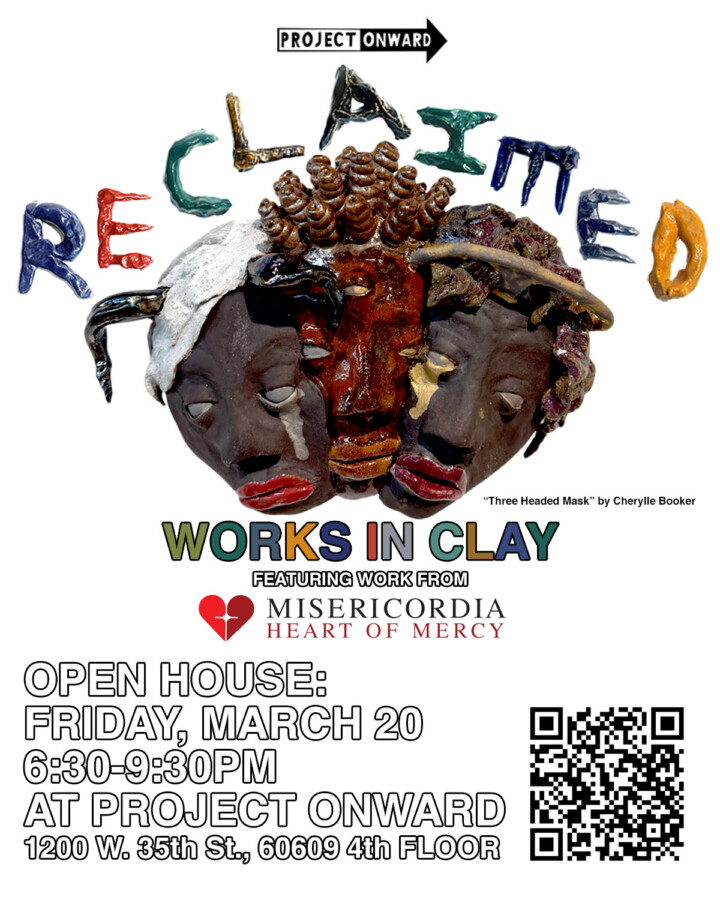

Reclaimed: Works In Clay
Project Onward’s ceramic studio fired its kiln for the first time in the fall of 2022. Since then we’ve cleared a path for over twenty neurodiverse artists to develop unique sculptural practices. “Reclaim” collects highlights over the years, from text-covered totems to functional pottery to glistening fairy masks. The exhibition shows the broad range of what is possible once the field of ceramics makes accessibility a priority.
Alongside Project Onward artists, the show includes work by several artists from Misericordia, a long-standing Chicago organization dedicated to supporting people with developmental disabilities through community, care, and creative expression.